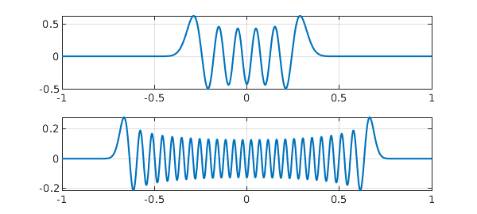

Sometimes a beautiful, fundamental idea is held back by a clunky name. Prolate Spheroidal Wave Functions (PSWFs) are an example. You'd never guess from this name that we're talking about the eigenfunctions of the continuous analogue of the famous Discrete Fourier Transform (DFT) matrix. As a continuous analogue, this is a natural for illustration in Chebfun.
With $c$ a positive constant, consider the bivariate function $$ K(x,t) = e^{icxt}, \quad -1\le x,t \le 1. $$ If $c = N\pi$ for an integer $N$ and we sample $K$ on the grid $$ t = \mu /N, \quad x = \nu /N, \qquad -N\le \mu,\nu < N, $$ we get the $2N\times 2N$ DFT matrix $$ \pmatrix{1 & 1 & 1 & \dots \cr 1 & \omega & \omega^2 & \dots \cr 1 & \omega^2 & \omega^4 & \dots \cr \vdots & \vdots & \vdots & \ddots}, \qquad \omega = e^{\pi i/N}, $$ except that the rows and columns are permuted since the grid is in $[-1,1)\times [-1,1)$ rather than $[0,2)\times [0,2)$. For example, here we compute the matrix for $N=10$. It is $\sqrt{2N}$ times a unitary matrix and of dimension $2N = 2c/\pi$, hence of rank exactly $2c/\pi$.
N = 10; c = N*pi; K10 = chebfun2(@(x,t) exp(1i*c*x.*t)); xx = (-N:N-1)'/N; kk = (-N:N-1)/N; A = K10(xx,kk); condA = cond(A), rankA = rank(A)
condA =
1.000000000000002
rankA =
20
Now let's look at the continuous bivariate function. White dots in this plot mark the sample points above.
MS = 'markersize'; IN = 'interpreter'; LT = 'latex'; LW = 'linewidth';
HA = 'horizontalalignment'; CT = 'center';
plot(real(K10)), view(0,90), axis square
hold on, plot3(xx+0*kk,kk+0*xx,2+0*xx+0*kk,'.w',MS,5), hold off
title('$\hbox{Re}(K(x,t))$',IN,LT)
Ordinarily one might think of this image as showing a patch of a function on $(-\infty,\infty)^2$ defining the Fourier transform (see the Wikipedia article on "Fourier operator"). But here we shall take the bounds $-1 \le x,t \le 1$ seriously and regard $K$ as the kernel of an integral operator mapping $L^2([-1,1])$ to itself: $$ L: f\mapsto g, \qquad g(t) = \int_{-1}^1 K(x,t) f(x) dx. $$ This is a normal operator, and its singular value decomposition is the same as its eigenfunction decomposition apart from factors of powers of $i$, with the singular values equal to the absolute values of the eigenvalues. With Chebfun we can compute the eigenfunctions of $K$. The absolute values $\lambda_j$ of the eigenvalues for $j<2c/\pi$ are all approximately equal to $\sqrt{2\pi /c}$, whereas for $j > 2c/\pi$, they decrease exponentially:
lamabs = sort(abs(eig(K10)),'descend'); semilogy(lamabs,'.',MS,13), grid on, hold on, ylim([1e-15 100]) N = 20; c = N*pi; K20 = chebfun2(@(x,t) exp(1i*c*x.*t)); lamabs = sort(abs(eig(K20)),'descend'); semilogy(lamabs,'.',MS,13), grid on, hold on text(20,4,'$c = 10\pi$',IN,LT,HA,CT) text(40,4,'$c = 20\pi$',IN,LT,HA,CT)
It's worth looking at the numbers, which show the leading eigenvalue absolute values matching $\sqrt{2\pi / c}$ to machine precision:
lamabs = sort(abs(eig(K10)),'descend')
lamabs = 0.447213595499959 0.447213595499958 0.447213595499958 0.447213595499958 0.447213595499958 0.447213595499958 0.447213595499957 0.447213595499932 0.447213595499294 0.447213595485794 0.447213595238870 0.447213591309933 0.447213536711059 0.447212872984997 0.447205822805121 0.447140711737797 0.446624298694088 0.443213844551762 0.425860515180683 0.367273333045201 0.254897726238098 0.136684682827388 0.060203856011478 0.023513916649549 0.008484923076925 0.002878032296469 0.000925348335130 0.000283486138384 0.000083064225173 0.000023347490651 0.000006310567002 0.000001643585968 0.000000413222096 0.000000100442595 0.000000023637213 0.000000005392098 0.000000001193688 0.000000000256709 0.000000000053681 0.000000000010924 0.000000000002165 0.000000000000418 0.000000000000079 0.000000000000015
In words, the set of functions in $[-1,1]$ that are bandlimited to wave numbers $[-c,c\kern .7pt ]$ has numerical dimension approximately $2c/\pi$. This discovery is due to David Slepian, Henry Pollak, and Henry Landau at Bell Labs in the late 1950s [1,2,3]. With the discrete matrix $A$, we were implicitly looking at periodic functions on $[-1,1]$ bandlimited to $[-c, c\kern .7pt]$. With the continuous function $K(x,t)$, we are looking at nonperiodic functions on the same interval, bandlimited in the same way. The numerical rank discovery tells us that this space of nonperiodic functions, though infinitely bigger than the space of periodic functions algebraically, is only slightly bigger numerically.
How can we take advantage of this bounded rank? The obvious idea is to work with the eigenfunctions of $K$. For small $c$ we can do this numerically. A computation with the Chebfun2 eig command delivers real eigenfunctions, and here we plot the first eight of them for $c = N\pi$, $N=4$. Note that each eigenfunction is either even or odd.
N = 4; c = N*pi;
K4 = chebfun2(@(x,t) exp(1i*c*x.*t));
[V,D] = eig(K4); V = real(V);
for j = 1:8
lam = D(j,j);
subplot(4,2,j), plot(V(:,j),LW,1), ylim([-2 2]), grid on
if abs(real(lam)) > abs(imag(lam))
lamstr = num2str(real(lam));
else
lamstr = [num2str(imag(lam)) 'i'];
end
title(['$\lambda_' int2str(j) ' = ' lamstr '$'],IN,LT)
end
For larger values of $c$, however, a numerical eigenvalue calculation is no good. The trouble is that the leading eigenvalues are numerically equal (in four sets, corresponding to the four powers of $i$) and the leading eigenfunction are correspondingly numerically nonunique, so if you calculate them, they come out with somewhat random shapes as well as being no longer real. To sort this out you need to do some thinking, not just apply a numerical eigenvalue calculation. Luckily such thinking has been done and you can find everying about prolate spheroidal wave functions in [4]. There is also a Chebfun command pswf that does the job, as we can see here with two examples:
subplot(2,1,1), plot(pswf(10,200)), grid on subplot(2,1,2), plot(pswf(50,200)), grid on

Here is a summary. For any fixed $c>0$,
Prolate spheroidal wave functions are the eigenfunctions of the kernel $K(x,t) = e^{icxt}$, $-1 \le x,t \le 1$.
They are an infinite set spanning $L^2([-1,1])$ but it only takes somewhat more than $2c/\pi$ of them to give good approximations to the functions in $L^2([-1,1])$ that are bandlimited to wave numbers $[c,c]$. For Pollak, Slepian, and Landau, the exciting applications were in signal processing. For many of us today, they are in providing efficient bases for numerical computations, requiring asymptotically $\pi/2$ times fewer points than polynomial bases such as Chebyshev polynomials.
Note that since prolate spheroidal wave functions are bandlimited, they are entire. Thus each one is defined for all $x$. They can be described as eigenfunctions of the following process applied to functions $f(x)$ with $x\in (-\infty,\infty)$: restrict $f$ to $[-1,1]$, then bandlimit the result to wave numbers in the interval $[-c,c]$.
For applications to band-limited quadrature, see [5], [6], and pswfpts.
References
[1] D. Slepian and H. O. Pollak, Prolate spheroidal wave functions, Fourier analysis and uncertainty --- I, Bell System Technical Journal 40 (1961), 43--63.
[2] H. J. Landau and H. O. Pollak, Prolate spheroidal wave functions, Fourier analysis and uncertainty --- II, Bell System Technical Journal 40 (1961), 65--84.
[3] H. J. Landau and H. O. Pollak, Prolate spheroidal wave functions, Fourier analysis and uncertainty --- III: the dimension of the space of essentially time-and band-limited signals, Bell System Technical Journal 41 (1962), 1295--1336.
[4] A. Osipov, V. Rokhlin, and H. Xiao, Prolate Spheroidal Wavefunctions of Order Zero: Mathematical Tools for Bandlimited Approximation, Springer, 2013.
[5] L. N. Trefethen, Exactness of quadrature formulas, SIAM Review, submitted.
[6] H. Xiao, V. Rokhlin, and N. Yarvin, Prolate spheroidal wave functions, quadrature and interpolation, Inverse Problems, 17 (2001), 805--828.